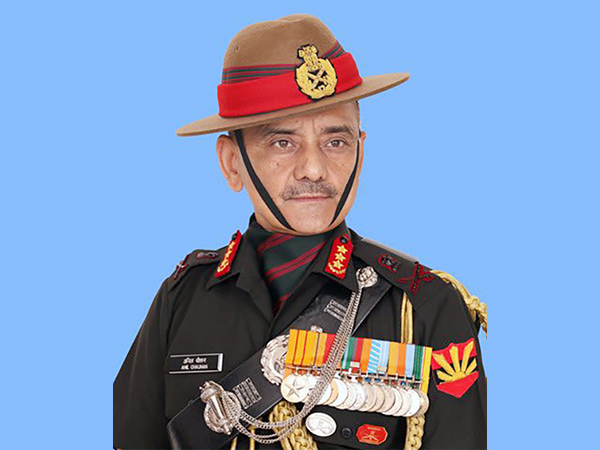

Born: 1961 (age 63)
Gwana,
Pauri Garhwal district, Uttar Pradesh
Occupation: four-star general of the
Indian Army
and 2nd Chief of Defence
Staff (CDS)
of the Indian Armed Forces
Achievements:Param Vishisht Seva Medal
Uttam Yudh Seva Medal
Ati Vishisht Seva Medal
Sena Medal
Vishisht Seva Medal